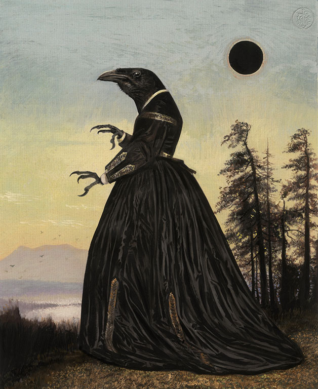
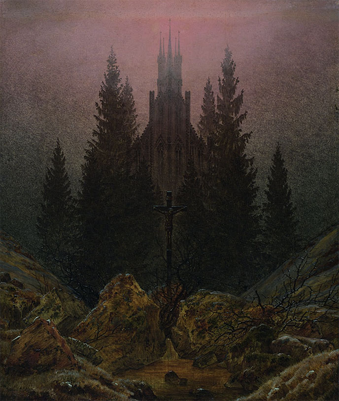
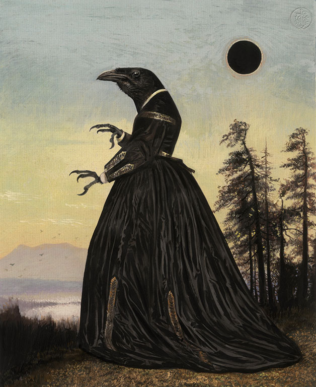
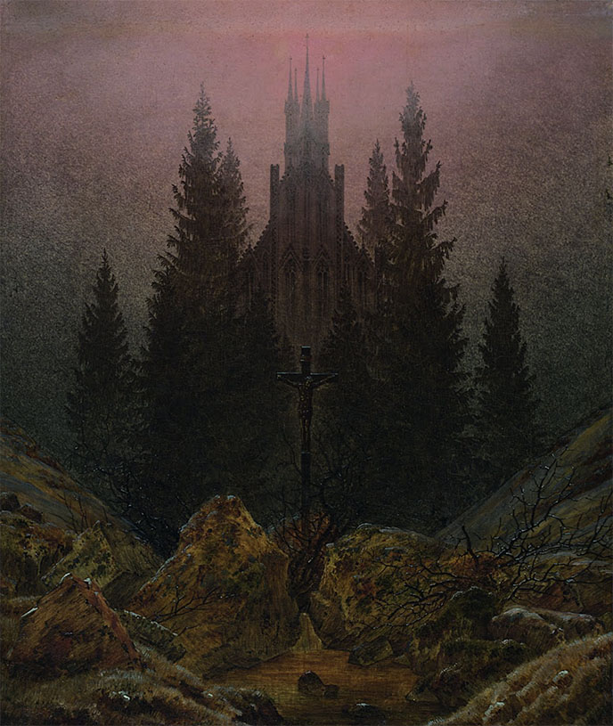
 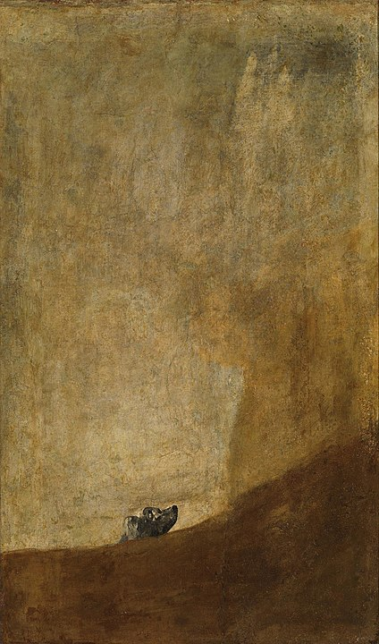
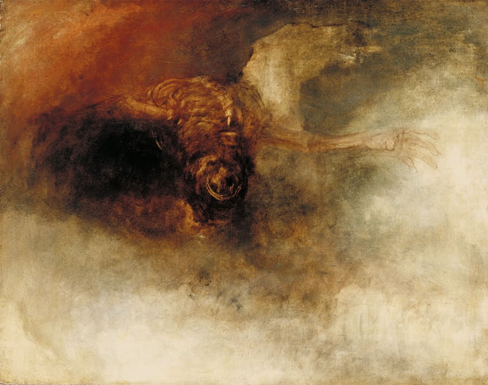
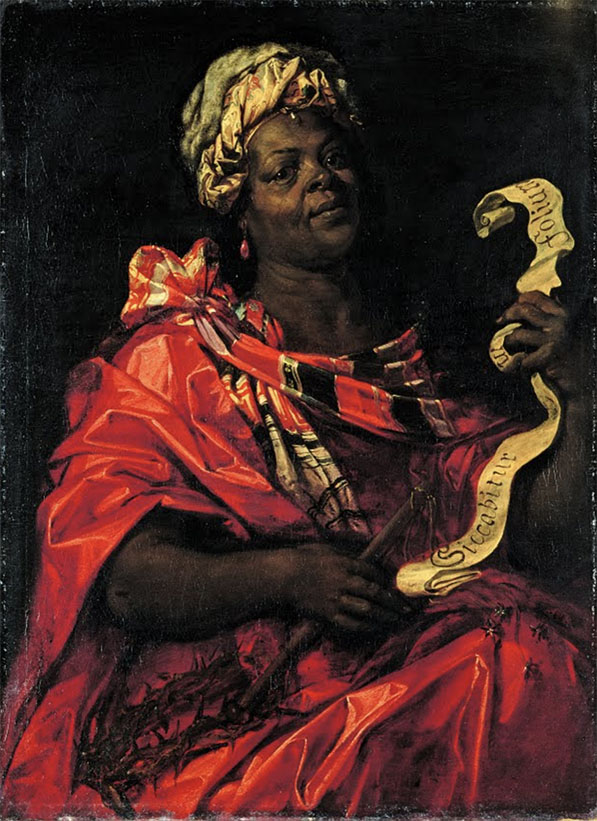
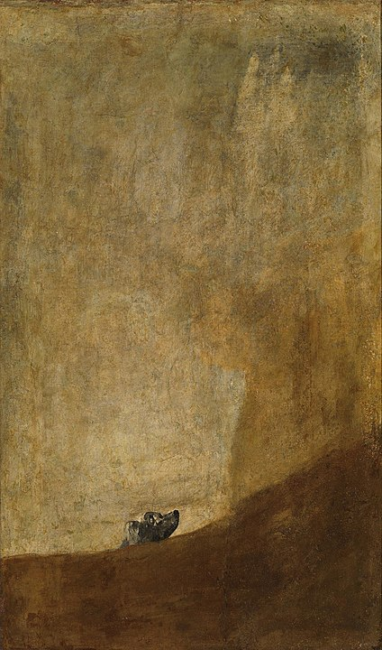
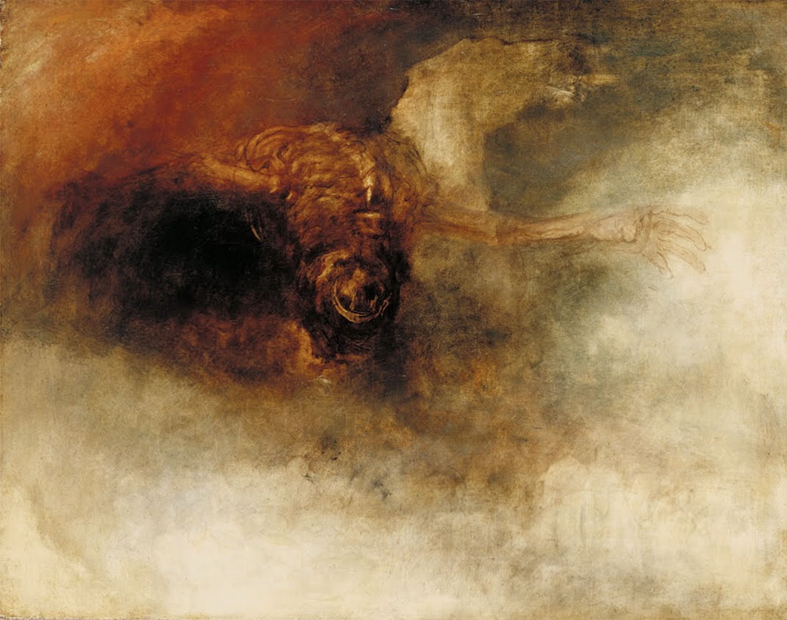
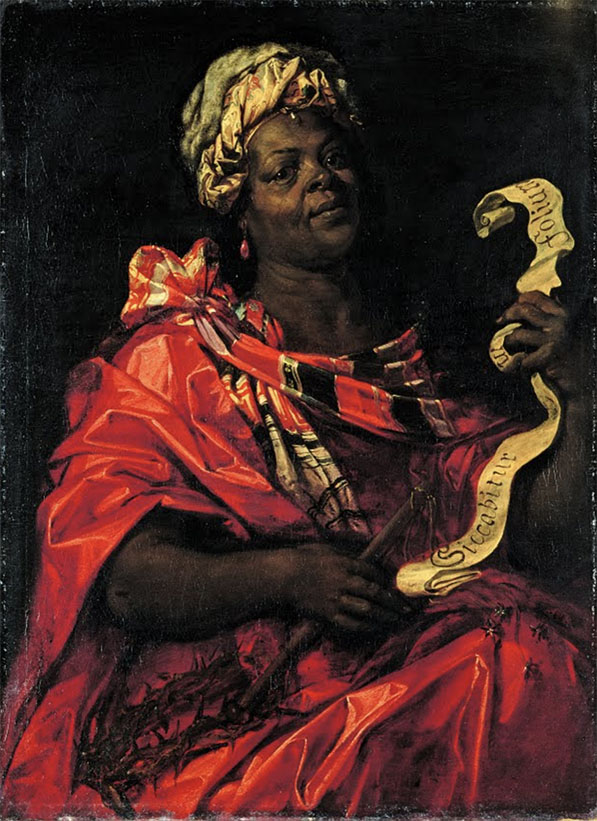


 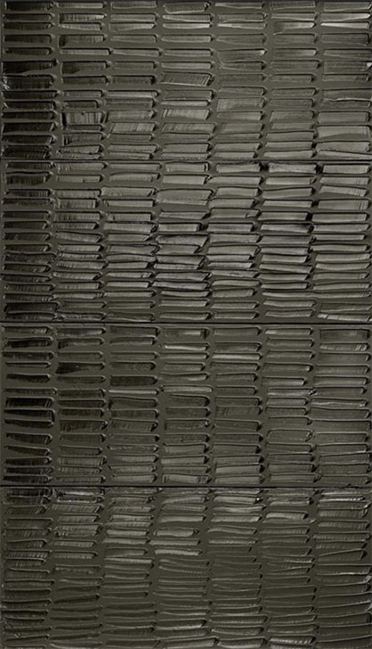
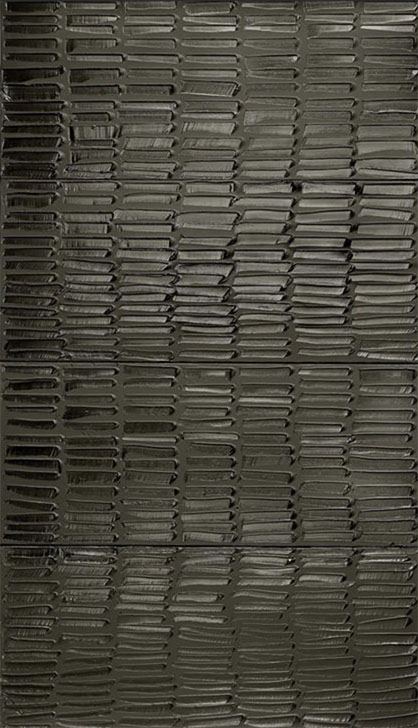

Against Black is an experimental / experiential meditation on the nature, politics, and mythology of the colour Black. It started as a response to the current atmosphere prevalent in many places around the world. From the Black Lives Matter movements, colonial and anti-colonial narratives that permeate our cultures, colourism, fear of unknowns, to the politics of aesthetics, and the pinnacle of grace and class, Black, the colour and the concept, encompasses all these multitudes.
I personally felt swept up in the nuances of the idea, the way it colours my own life, or obscures it. I chose to focus my project on the colour Black as an anchor point, or a rudder, to further explore some difficult and dark realities. Along with the colour itself, I had two other anchors: Carl Jung’s theories in his book, Man and His Symbols; and John Berger’s analysis of the female nude in oil painting and modern day advertising, as outlined in his series, Ways of Seeing.
For these reasons, the project came together as a collection of classical art, sculpture, and other images which have existed for at least a generation before ours, some for dozens or more, and have persisted through time and imagination.
These images of monsters and demons, like John Berger’s nudes with femininity, have coloured our idea of darkness and the unknown, and have populated what Carl Jung refers to as the ‘collective unconscious’.
The project takes the form of a cloud, with some clusters organized as editorial spaces of images and text that relate to each other, as they would in a traditional 2D layout. ‘Constellations’ are two or more images that are separated in the cloud but are related by some thread of narrative. Along the horizontal axis, the content is arranged on a spectrum of literal Black (the colour) to abstract Black (the concept) both sides asking an essential question of the viewer: What do you see ( in black ), and What do you fear ( in black. )
Ultimately, to me, Black represents a choice between Curiosity and Fear. We are always choosing. While surrounded by so many images and ideas, which side do you feel youself drawn to? Curiosity? Or Fear?
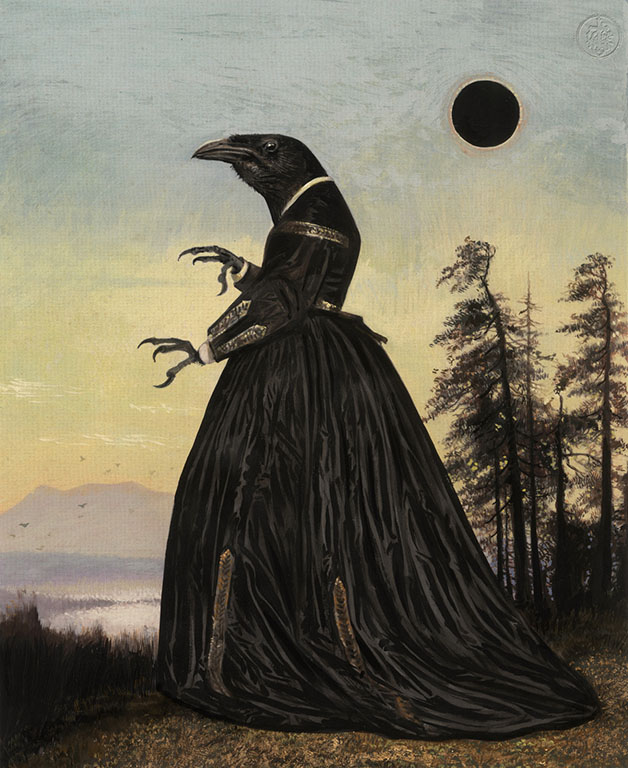
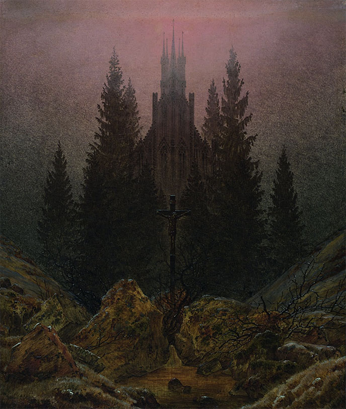
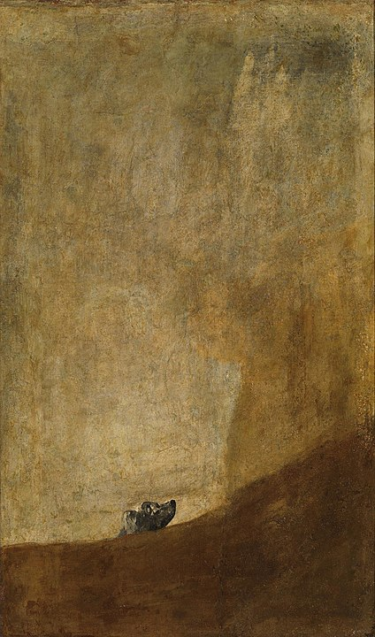
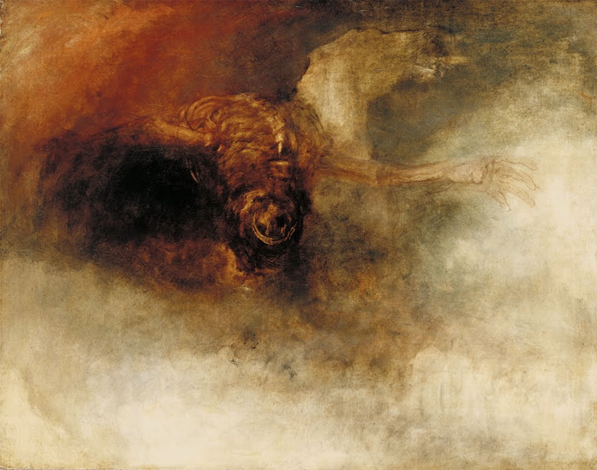
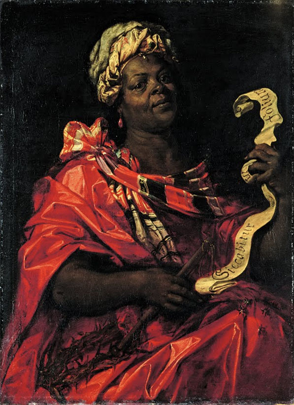
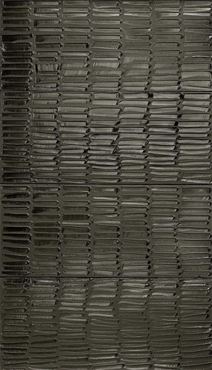